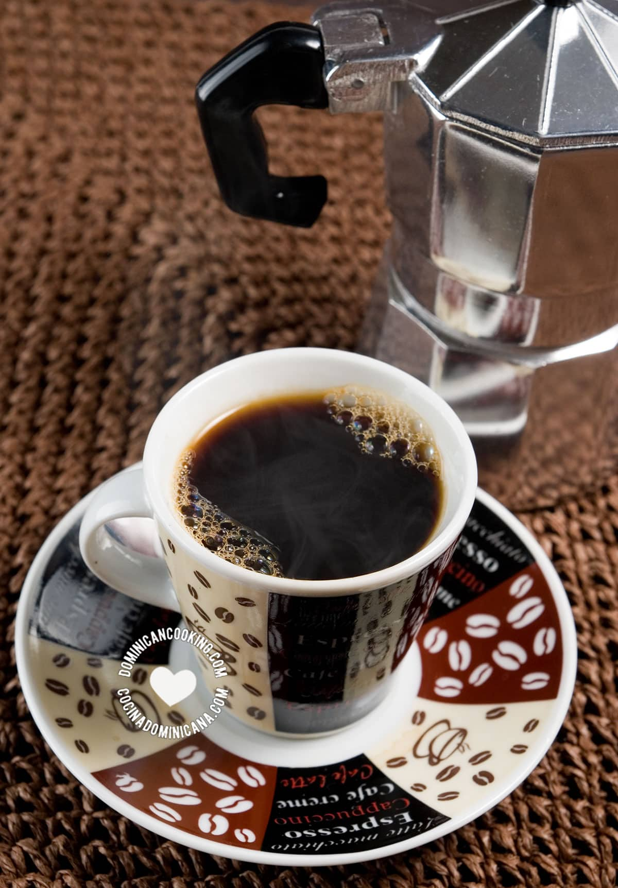

Dominican Breakfast Dishes
Start your day the Dominican way! These breakfast options are both hearty and delicious, rooted in tradition and flavor.
Popular Breakfast Items
- Tres Golpes – Mashed plantains, fried cheese, eggs, and Dominican salami.
- Harina de Maíz – Creamy cornmeal porridge often served with milk and cinnamon.
- Pan de Agua – Traditional Dominican bread often eaten with butter or cheese.
- Batidas – Fresh tropical fruit smoothies served with breakfast.
Dominican breakfasts are designed to be filling, flavorful, and full of cultural pride. Families often start their mornings with a hot plate of Tres Golpes or hearty cornmeal porridge.
Breakfast is commonly enjoyed at home, but many local eateries (called “comedores”) also serve traditional morning dishes, especially on weekends.
Dominican coffee, dark, strong, and sweet, is almost always part of the breakfast experience, often served with a small piece of bread or cheese on the side.
Traditional Morning Beverages
Dominicans take pride in their morning beverages. A strong cup of Dominican coffee, usually brewed in a greca (stovetop coffee maker), is a daily essential. It’s rich, bold, and often sweetened generously with sugar.
In rural areas, hot chocolate made from local cacao is also popular — often served with a piece of buttered bread or cassava. Fresh tropical juices like passionfruit (chinola), papaya (lechosa), and orange are commonly enjoyed as refreshing morning drinks.
